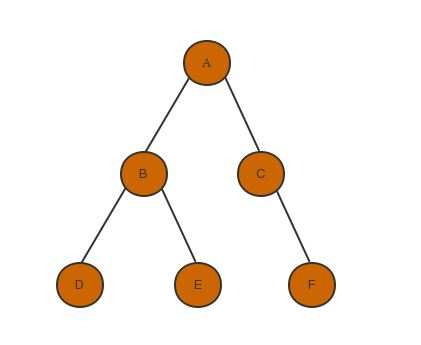

Given a list lst and a number N, create a new list that contains each number of the list at most N times without reordering. For example if N = 2, and the input is [1,2,3,1,2,1,2,3], you take [1,2,3,1,2], drop the next [1,2] since this would lead to 1 and 2 being in the result 3 times, and then take 3, which leads to [1,2,3,1,2,3]
# 创造一个list ans; ans.count(元素) 可以返回该元素在list中出现次数
def delete_uth_fun1(array, n):
ans = []
for num in array:
if ans.count(num) < n:
ans.append(num)
return ans
# 使用collections
import collections
def delete_nth(array, n):
result = []
# keep track of occurrences
counts = collections.defaultdict(int)
for i in array:
if counts[i] < n:
result.append(i)
counts[i] += 1
return result
>>> from collections import defaultdict
>>> s = 'mississippi'
>>> d = defaultdict(int)
>>> for k in s:
... d[k] += 1
...
>>> d.items()
[('i', 4), ('p', 2), ('s', 4), ('m', 1)]
from collections import defaultdict
s = 'mississippi'
d = defaultdict(int)
for k in s:
d[k] += 1
d.items()
[('i', 4), ('p', 2), ('s', 4), ('m', 1)]
Implement Flatten Arrays. Given an array that may contain nested arrays, produce a single resultant array.
from collections import Iterable
# return list
def flatten(input_arr, output_arr=None):
if output_arr is None:
output_arr = []
for ele in input_arr:
# Iterable用于检查元素是否是可以进行循环的
if isinstance(ele, Iterable):
flatten(ele, output_arr) # 若元素是可以循环的，则将其展开，是一个自己调用自己的函数
else:
output_arr.append(ele)
return output_arr
import collections
p = [[1,2,3,4], (1,2,3), set([1,2,3]), 'things', 123]
for item in p:
print isinstance(item, collections.Iterable)
True
True
True
True
False
# 求元素在list中的index
lst = [ ... ]
pos = lst.index(0)
Given an array of integers, return indices of the two numbers
such that they add up to a specific target.
You may assume that each input would have exactly one solution,
and you may not use the same element twice.
Example:
Given nums = [2, 7, 11, 15], target = 9,
Because nums[0] + nums[1] = 2 + 7 = 9,
return (0, 1)
def two_sum(array, target):
dic = {}
for i, num in enumerate(array):
if num in dic:
return dic[num], i
else:
dic[target - num] = i
return None
Given an array S of n integers, are there elements a, b, c in S
such that a + b + c = 0?
Find all unique triplets in the array which gives the sum of zero.
Note: The solution set must not contain duplicate triplets.
For example, given array S = [-1, 0, 1, 2, -1, -4],
A solution set is:
{
(-1, 0, 1),
(-1, -1, 2)
}
def three_sum(array):
"""
:param array: List[int]
:return: Set[ Tuple[int, int, int] ]
"""
res = set()
array.sort()
for i in range(len(array) - 2): #固定一个i,对l和r进行循环
if i > 0 and array[i] == array[i - 1]:
continue
l, r = i + 1, len(array) - 1 #l 和 r 分别取最大或者最小的值。
while l < r:
s = array[i] + array[l] + array[r]
if s > 0: # 所以当和小的时候，把值调大；和大的时候，把值调小
r -= 1
elif s < 0:
l += 1
else:
# found three sum
res.add((array[i], array[l], array[r]))
# remove duplicates
while l < r and array[l] == array[l + 1]:
l += 1
while l < r and array[r] == array[r - 1]:
r -= 1
l += 1
r -= 1
return res
# 给set()添加元素：
res = set()
res.add( (array[i], array[l], array[r]) )
# 提取字典的键值最大值
values = {}
max_value = max(values.values())
# 对字典的键进行循环
for i in values.keys():
...
arr = [1,2,3,4,5,6,7]
x = arr[:]
# 将arry进行赋值
Given an array of n integers, are there elements a, b, .. , n in nums such that a + b + .. + n = target?
def n_sum(n, nums, target, **kv):
def sumBoth(a, b):
return a + b
def compareBoth(a, b):
if a < b:
return -1
if a > b:
return 1
else:
return 0
def sameEqual(a, b):
return a == b
def n_sum(n, nums, target):
if n==2:
results = two_Sum(num, target)
else:
results = []
prev_num = None
for index, num in enumerate(nums):
if prev_num is not None and sameEqual(prev_num, num):
continue
prev_num = num
n_minus_result = n_sum(n-1, nums[index+1:], target-num) #递归
# 将符合条件的元素append到每个list
n_minus1_results = append_elem_to_each_list(num,
n_minus1_results)
results += n_minus1_results
return union(results)
def append_elem_to_each_list(ele, container):
result = []
for elems in container:
def two_Sum(nums, target):
head = 0
tail = len(nums) - 1
results = []
while head < tail:
sum = sumBoth( nums[head], nums[tail] )
flag = compareBoth( sum, target )
if flag == -1: #说明值小了
head += 1
if flag == 1: #说明值大了
tail -= 1
else:
results.append( sorted(nums[head], nums[tail]) )
head += 1
tail -= 1
while head < tail and array[head] == array[head + 1]:
head += 1
while head < tail and array[tail] == array[tail - 1]:
tail -= 1
return results
def rotate_v3(array, k):
if array is None:
return None
length = len(array)
k = k % length
return array[length - k:] + array[:length - k]
# array可以做加法，让两端数组拼接起来
result = []
result.append( [0]*10 )
# 在名为result的list下append 10个0
do BFS from (0,0) of the grid and get the minimum number of steps needed to get to the lower right column
only step on the columns whose value is 1
if there is no path, it returns -1
例如：
mat[ROW][COL] =
[[1, 0, 1, 1, 1, 1, 0, 1, 1, 1],
[1, 0, 1, 0, 1, 1, 1, 0, 1, 1],
[1, 1, 1, 0, 1, 1, 0, 1, 0, 1],
[0, 0, 0, 0, 1, 0, 0, 0, 0, 1],
[1, 1, 1, 0, 1, 1, 1, 0, 1, 0],
[1, 0, 1, 1, 1, 1, 0, 1, 0, 0],
[1, 0, 0, 0, 0, 0, 0, 0, 0, 1],
[1, 0, 1, 1, 1, 1, 0, 1, 1, 1],
[1, 1, 0, 0, 0, 0, 1, 0, 0, 1]]
def maze_search(grid):
# 上下左右行走
dx = [0,0,-1,1]
dy = [-1,1,0,0]
n = len(grid)
m = len(grid[0])
q = [(0,0,0)]
visit = [[0]*m for _ in range(n)]
if grid[0][0] == 0:
return -1
visit[0][0] = 1
while q:
i, j, step = q.pop(0)
if i == n-1 and j == m-1:
return step
for k in range(4):
x = i + dx[k]
y = j + dy[k]
if x>=0 and x < n and y=0:
if grid[x][y] ==1 and visit[x][y] == 0:
visit[x][y] = 1
q.append((x,y,step+1))
return q
def bfs(grid,matrix,i,j,count):
q = [(i,j,0)]
while q:
i, j, step = q.pop(0)
for k, l in [(i-1,j), (i+1, j), (i,j-1), (i, j+1)]:
if 0<= k <= len(grid) and 0<= l <= len(grid[0]) and \
matrix[k][l] == count and grid[k][l] == 0:
q.append(k, l, step+1)
# 迅速构建二维数组的方法
matrix = [[[0,0] for i in range(len(grid[0]))] for j in range(len(grid))]
深度优先搜索的缺点：难以寻找最优解，仅仅只能寻找有解。其优点就是内存消耗小。回溯法（深度优先搜索）作为最基本的搜索算法，其采用了一种“一只向下走，走不
通就掉头”的思想
1.从顶点v出发，首先访问该顶点;
2.然后依次从它的各个未被访问的邻接点出发深度优先搜索遍历图;
3.直至图中所有和v有路径相通的顶点都被访问到。
4.若此时尚有其他顶点未被访问到，则另选一个未被访问的顶点作起始点，重复上述过程，直至图中所有顶点都被访问到为止

from collections import deque
import sys
def add_node(node,nh):
key,val = node
if not isinstance(val, list):
print('node value should be a list')
#sys.exit('failed for wrong input')
nh[key] = val
def depth_first(root,nh):
if root != None:
search_queue =deque()
search_queue.append(root)
visited = []
else:
print('root is None')
return -1
while search_queue: #当 search_queue还有元素压栈的时候
top = search_queue.popleft() # 将list左侧的元素取出
print(top)
if (top not in visited) and (top in nh.keys()):
# 当top没有visited, 但是top存在neighbor的时候
tmp = nh[top]
for index in tmp:
search_queue.appendleft(index)
visited.append(top)
neighbor = {}
add_node(['A',['B','C']], neighbor)
add_node(['B',['D','E']], neighbor)
add_node(['C',['F']], neighbor)
depth_first('A',neighbor)
Python deque module It provides you with a double ended queue which means that you can append and delete elements from either side of the list
d = deque()
d.append('1')
d.append('2')
d.append('3')
len(d)
d[0]
d[-1]
>> Output
3
'1'
'3'
# Can Pop value from both side of the deque
d = deque('12345')
len(d)
d.popleft()
d.pop()
d
>> Output
5
'1'
'5'
deque(['2', '3', '4'])
d = deque([1,2,3,4,5])
d.extendleft([0])
d.extend([6,7,8])
d
>> Output
deque([0, 1, 2, 3, 4, 5, 6, 7, 8])
Given a 2d grid map of '1's (land) and '0's (water),
count the number of islands.
An island is surrounded by water and is formed by
connecting adjacent lands horizontally or vertically.
You may assume all four edges of the grid are all surrounded by water.
Examples:
11110
11010
11000
00000
Answer: 1
Example 2:
11000
11000
00100
00011
Answer: 3
def num_island(grid):
count = 0
for i, row in enumerate(grid):
for j, col in enumerate(grid):
if col == '1':
dfs(grid, i, j)
count += 1
return count
def dfs(grid, i, j):
if (j < 0 or len(grid[0])) or (i < 0 or i >= len(grid)):
return
if grid[i][j] != '1':
return
grid[i][j] = '0'
dfs(grid, i+1, j)
dfs(grid, i-1, j)
dfs(grid, i, j+1)
dfs(grid, i, j-1)
# 当四个递归都return的时候，说明四面都遇到了海洋'0'，
# 所以这就是一个完整的island, count + 1
unittest python
# 文件名： test_calc.py
# 运行该脚本方式: python -m unittest test_calc.py
# 但是，加入__name__之后，可以简单地使用python test_calc.py来运行程序
import unittest
def add(a,b):
return a+b
def divide(x, y):
if y == 0:
raise ValueError('Can not divide by zero')
return x / y
class TestCalc(unittest.TestCase):
# Inherent from unittest.TestCase, will give a lot of testing capabilities
# This name needs to start wirh test_(convention)
def test_add(self):
result = add(10,5)
# 验证得数是否是15
self.assertEqual(result, 15)
def test_divide(self):
self.assertRaises(ValueError, divide, 10, 0) #用于检测Raise是否正常工作
# 但这样写过于繁琐，因此可以使用context manager
with self.assertRaises(ValueError):
divide(10, 0)
if __name__ == '__main__':
unittest.main()
Binary search works for a sorted array.
T(n): O(log n)
def binary_search_recur(array, low, high, val):
if low > high: # error case
return -1
mid = (low + high) // 2
if val < array[mid]:
return binary_search_recur(array, low, mid - 1, val)
elif val > array[mid]:
return binary_search_recur(array, mid + 1, high, val)
else:
return mid
unittest python
# 文件名： test_calc.py
# 运行该脚本方式: python -m unittest test_calc.py
# 但是，加入__name__之后，可以简单地使用python test_calc.py来运行程序
import unittest
def add(a,b):
return a+b
def divide(x, y):
if y == 0:
raise ValueError('Can not divide by zero')
return x / y
class TestCalc(unittest.TestCase):
# Inherent from unittest.TestCase, will give a lot of testing capabilities
# This name needs to start wirh test_(convention)
def test_add(self):
result = add(10,5)
# 验证得数是否是15
self.assertEqual(result, 15)
def test_divide(self):
self.assertRaises(ValueError, divide, 10, 0) #用于检测Raise是否正常工作
# 但这样写过于繁琐，因此可以使用context manager
with self.assertRaises(ValueError):
divide(10, 0)
if __name__ == '__main__':
unittest.main()